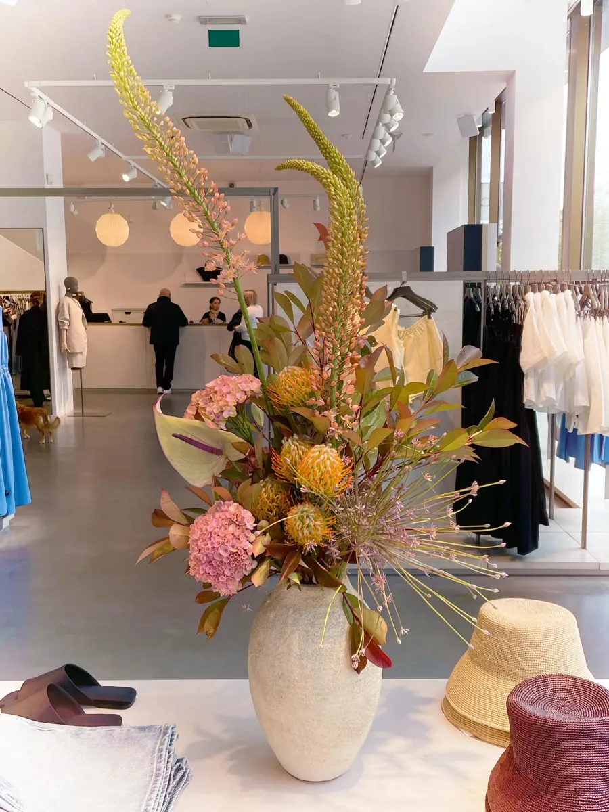
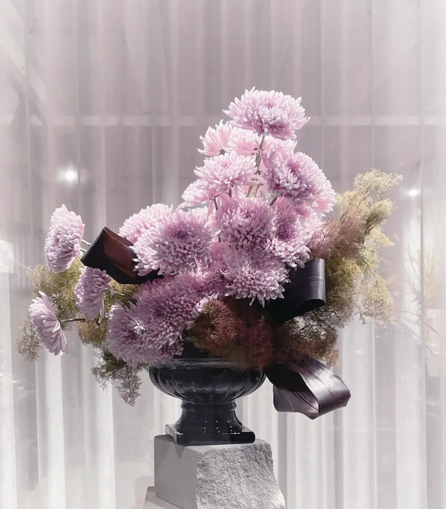
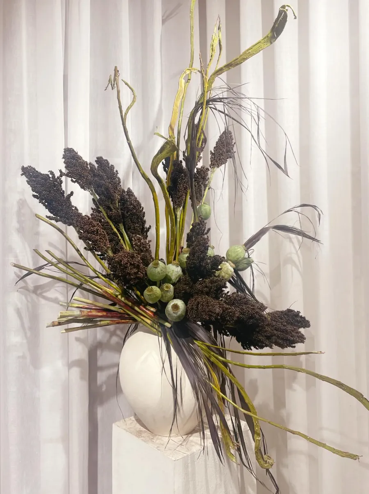
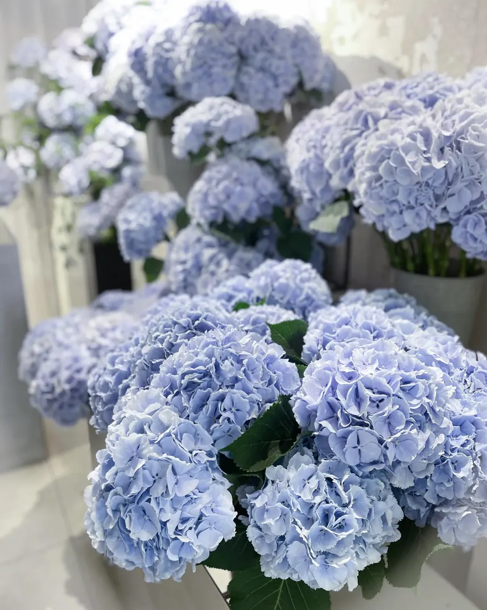
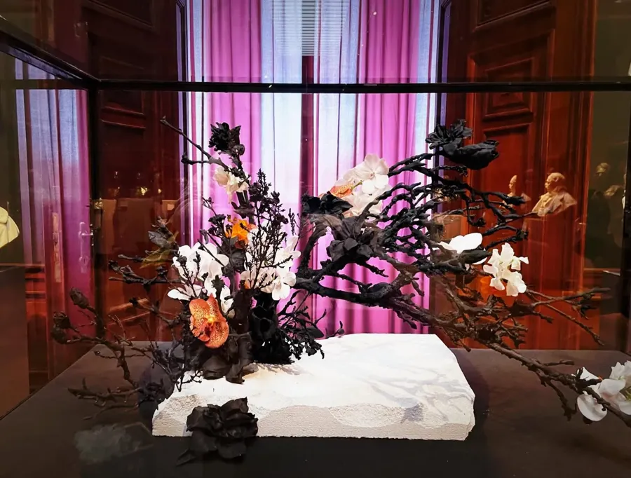
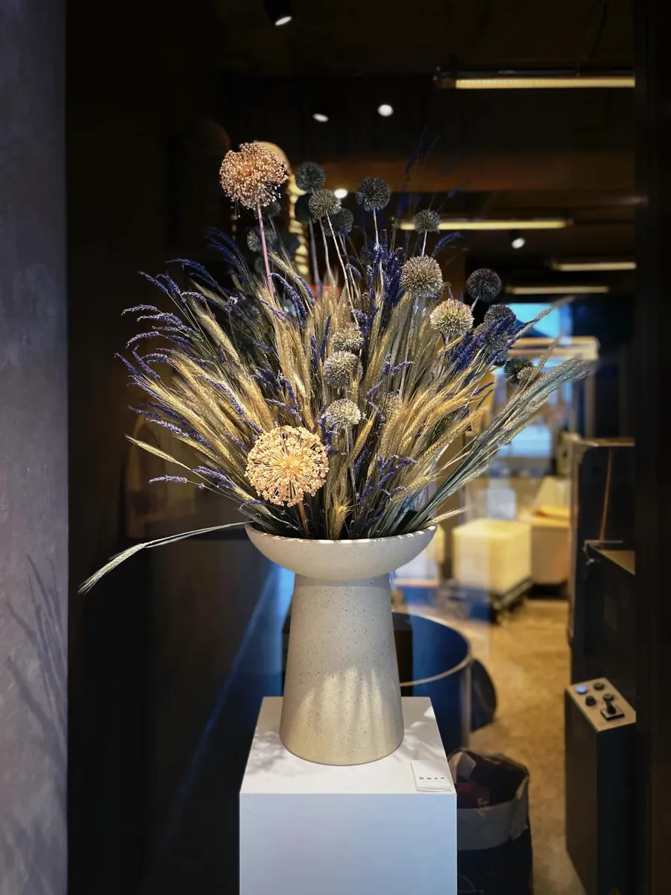
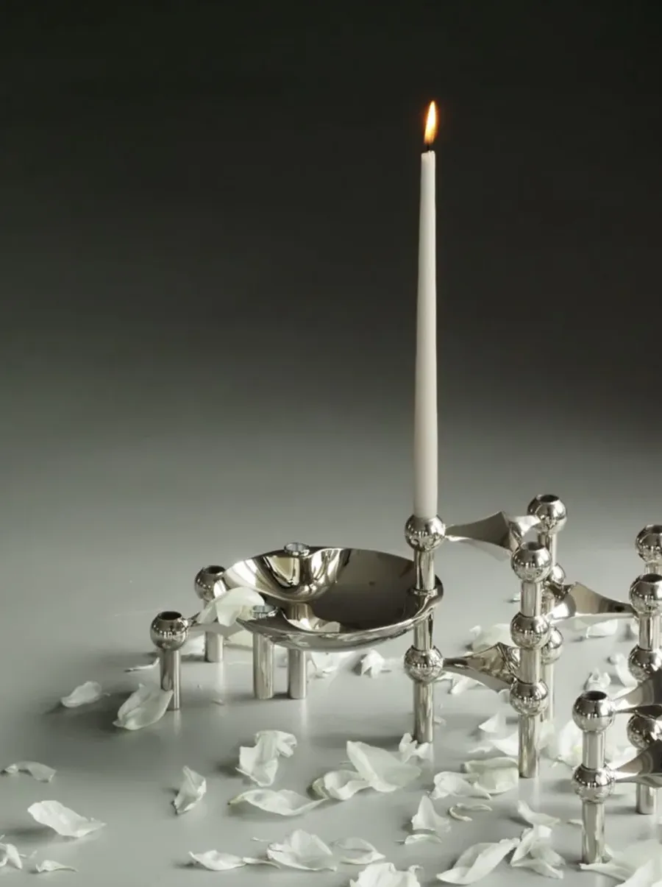

Niet braaf. Wel met zorg.
Lange takken, bloemen die je niet elke dag ziet, kleuren die botsen tot ze kloppen. Geen boeket is hetzelfde.






Vertel ons voor wie. Wij doen de rest.
Kom langs in de winkel of stuur een berichtje, en vertel wat je in gedachten hebt.

Heel mijn persoonlijkheid zat gewoon in mijn bruidsboeket.
Punto Copywriting, op GoogleBloemen in andermans ruimte.
Van een etalage tot een zaal in een museum. Een greep uit de plekken waar onze bloemen de voorbije maanden stonden.




Ook gewerkt voor S.M.A.K. en een shoot van Knack Weekend. Bloemen nodig voor jouw zaak of event? Mail ons.
Mail info@owenstudio.be
Flowers & lifestyle.
Naast bloemen staan er in de winkel objecten die we zelf graag zien. Vazen, kandelaars, dingen met vakmanschap.

Philia-vaas, Pietre Trovanti

Kandelaar, Stoff Nagel
Je gaat altijd buiten met een prachtig boeket.
Als je bloemen nodig hebt, ga naar deze winkel, altijd super vriendelijk behulpzaam. Zelfs als je nog niet echt een idee hebt wat je zoekt, je gaat er altijd buiten met een prachtig boeket. Zeker een aanrader dus!
Owen is echt een heel vriendelijk en attente bloemist. Een prachtig boeketje aan vrienden kunnen geven, de foto's spreken voor zich denk ik. En eerlijk geprijsd.
Ik vertrouw Owen met mijn ogen toe. Ze voelen heel goed aan waar je precies naar op zoek bent en overtreffen dan los al je verwachtingen.
Kom langs.
9000 Gent